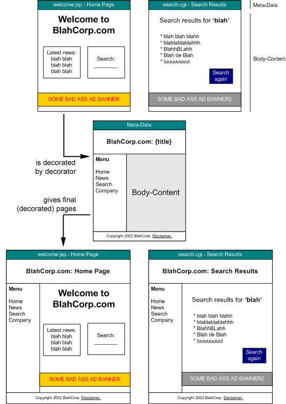

SiteMesh3 Overview
Introduction (TODO)
This tutorial is a quick introduction to using SiteMesh3 in a web-application. It covers:
- A high level overview of how SiteMesh3 works
- Installation and configuration
- Building and applying a simple decorator
It is recommend you read the high level SiteMesh Overview before this tutorial.
- SiteMesh is a web-page layout and decoration framework and web- application integration framework to aid in creating sites consisting of pages for which a consistent look/feel, navigation and layout scheme is required.
- SiteMesh intercepts requests to any static or dynamically generated HTML page requested through the web-server, processes the content and then merges it with one or more decorators to build the final result.
- SiteMesh can also be used compose large pages of smaller pages and layouts.
- SiteMesh is fast. Really fast.
- SiteMesh can be used in Java based web-applications, or applied to content as an offline job.
- SiteMesh is extensible.
- Get started...
